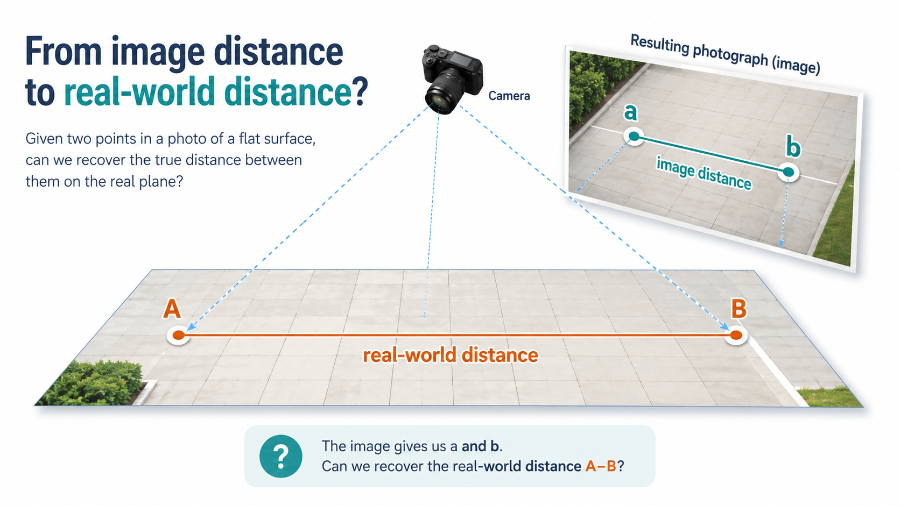
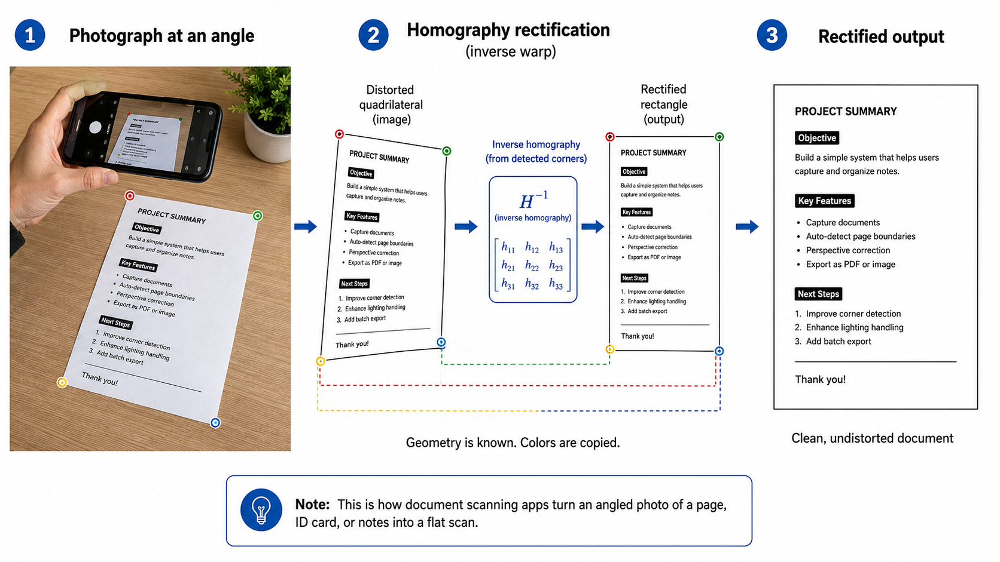
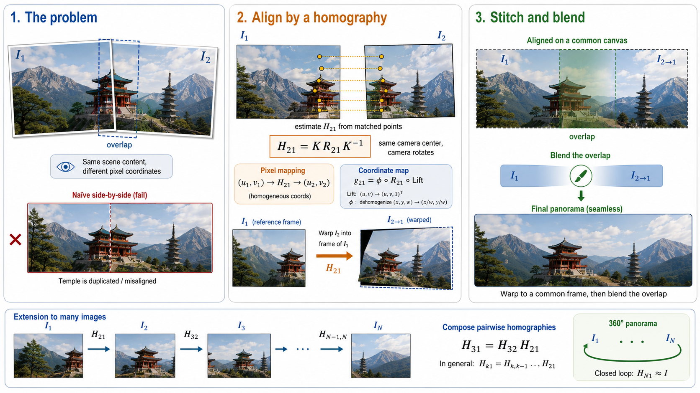

3D Computer Vision from First Principles — Part 4
Homographies
Introduction
I did not know what a homography was until last week.
I have always wondered how the distance between two points in an image relates to the actual distance between them in the real world. I never bothered to look it up seriously or understand it deeply. But having spent some time with metric spaces and distance functions, I found myself coming back to this question. What if there was something going on here? And it turns out there is — and it is not as complicated as the mathematics I was used to, but it is clean and satisfying in its own way.
So here is a question for you: if I take a photograph of a flat surface — a road, a football pitch, a tiled floor — and I can see two points in the image, can I figure out the actual distance between them in the real world?

It turns out the answer is yes — and the tool that makes it possible is a homography. A homography maps points on a flat surface to their positions in the image, and its inverse maps image points back to the flat surface. Once you have that inverse, distances in the real world follow immediately.
And the homography itself is not a mysterious object. It is the camera matrix from Part 3 restricted to a flat scene. Set \(Z = 0\) for all world points, substitute into \(P = K[R \mid \mathbf{t}]\), and the \(3 \times 4\) matrix collapses to a \(3 \times 3\) matrix. That is the homography. One substitution. No new machinery. [Note that \(Z = 0\) is a choice of coordinate system, not a restriction on the scene. You are free to choose any coordinate system for the flat surface.]
This also means that the degenerate case that broke DLT in Part 3 — all world points lying on a single plane — is not a failure at all. It is a different, simpler, and extraordinarily useful problem. The full camera matrix is overkill when your scene is flat. The homography is exactly what you need.
In this post we will derive the homography from the camera matrix, understand what it preserves and what it destroys, estimate it from point correspondences, and see why it shows up everywhere — image stitching, document rectification, augmented reality, planar change detection, and eventually camera calibration itself.
And yes — we are stepping back into \(\mathbb{P}^2\). After one post in the real world \(\mathbb{R}^3\), the equivalence classes and projective duality from Parts 1 and 2 are back. They have been waiting. ## From the Camera Matrix to a Homography
In Part 3, we derived the full camera matrix. A world point \((X, Y, Z)^\top\) maps to an image point via:
\[\lambda\begin{pmatrix} u \\ v \\ 1 \end{pmatrix} = P\begin{pmatrix} X \\ Y \\ Z \\ 1 \end{pmatrix} = K\begin{pmatrix} \mathbf{r}_1 & \mathbf{r}_2 & \mathbf{r}_3 & \mathbf{t} \end{pmatrix} \begin{pmatrix} X \\ Y \\ Z \\ 1 \end{pmatrix}, \qquad \lambda \neq 0\]
where \(\mathbf{r}_1, \mathbf{r}_2, \mathbf{r}_3\) are the columns of \(R\) and \(\mathbf{t}\) is the translation vector.
Now set \(Z = 0\) for all world points. Substituting:
\[\lambda\begin{pmatrix} u \\ v \\ 1 \end{pmatrix} = K\begin{pmatrix} \mathbf{r}_1 & \mathbf{r}_2 & \mathbf{r}_3 & \mathbf{t} \end{pmatrix} \begin{pmatrix} X \\ Y \\ 0 \\ 1 \end{pmatrix}, \qquad \lambda \neq 0\]
The column \(\mathbf{r}_3\) multiplies zero and disappears:
\[\lambda\begin{pmatrix} u \\ v \\ 1 \end{pmatrix} = K\begin{pmatrix} \mathbf{r}_1 & \mathbf{r}_2 & \mathbf{t} \end{pmatrix} \begin{pmatrix} X \\ Y \\ 1 \end{pmatrix}, \qquad \lambda \neq 0\]
Define:
\[\boxed{H = K\begin{pmatrix} \mathbf{r}_1 & \mathbf{r}_2 & \mathbf{t} \end{pmatrix} \in \mathbb{R}^{3 \times 3}}\]
Then:
\[\lambda\begin{pmatrix} u \\ v \\ 1 \end{pmatrix} = H\begin{pmatrix} X \\ Y \\ 1 \end{pmatrix}, \qquad \lambda \neq 0\]
This is the homography. A \(3 \times 3\) matrix that maps points on the world plane \((X, Y)^\top\) to image coordinates \((u, v)^\top\).
Recovering pixel coordinates
Given \((X, Y)^\top\), apply \(H\):
\[H\begin{pmatrix} X \\ Y \\ 1 \end{pmatrix} = \begin{pmatrix} a \\ b \\ c \end{pmatrix}\]
where:
\[a = h_{11}X + h_{12}Y + h_{13}, \quad b = h_{21}X + h_{22}Y + h_{23}, \quad c = h_{31}X + h_{32}Y + h_{33}\]
We have seen this step before — in Part 1, and again in Part 3. The map \(\phi\) takes a triple \((a, b, c)^\top\) with \(c \neq 0\) and returns the Euclidean point:
\[\phi\begin{pmatrix} a \\ b \\ c \end{pmatrix} = \begin{pmatrix} a/c \\ b/c \end{pmatrix}\]
Applying \(\phi\) to the output of \(H\):
\[\boxed{\begin{pmatrix} u \\ v \end{pmatrix} = \phi\left(H\begin{pmatrix} X \\ Y \\ 1 \end{pmatrix}\right) = \begin{pmatrix} \dfrac{h_{11}X + h_{12}Y + h_{13}}{h_{31}X + h_{32}Y + h_{33}} \\[10pt] \dfrac{h_{21}X + h_{22}Y + h_{23}}{h_{31}X + h_{32}Y + h_{33}} \end{pmatrix}}\]
provided \(c \neq 0\). The denominator depends on \((X, Y)\) — this position-dependent division is what produces perspective distortion. Different parts of the world plane get compressed or stretched differently in the image.
We will understand the etymology and meaning of the word “homography” after we have studied its properties and actions. The name will make sense then. If I introduce it now, it will be a meaningless word that you will probably forget. So let’s first understand what a homography is based on what a homography does.
Where Does a Homography Live?
A world point on the plane \(Z = 0\) has ordinary coordinates \(\mathbf{X} = (X, Y, 0)^\top\). But the mathematics of the homography invites us to think of it differently — as the lifted vector \(\tilde{\mathbf{X}} = (X, Y, 1)^\top\), the homogeneous coordinate of the plane point. The third coordinate is no longer \(0\) (the actual \(Z\)) but \(1\) (a bookkeeping device that carries the constants through matrix multiplication).
So \(H\) acts on \((X, Y, 1)^\top \in \mathbb{R}^3\) and produces \((p, q, w)^\top \in \mathbb{R}^3\). Applying \(\phi\) recovers the pixel:
\[\phi\begin{pmatrix} p \\ q \\ w \end{pmatrix} = \begin{pmatrix} p/w \\ q/w \end{pmatrix} = \begin{pmatrix} u \\ v \end{pmatrix}\]
Now we know one more fact from Part 1: scaling does not matter for \(\phi\).
\[\phi\begin{pmatrix} p \\ q \\ w \end{pmatrix} = \phi\begin{pmatrix} \lambda p \\ \lambda q \\ \lambda w \end{pmatrix}, \qquad \lambda \neq 0\]
More formally:
\[\phi(H\tilde{\mathbf{X}}) = \phi(\lambda H\tilde{\mathbf{X}}), \qquad \lambda \neq 0\]
This is why, in the literature, a homography matrix is defined only up to a nonzero scale — \(H\) and \(\lambda H\) represent the same geometric map. In equivalence class notation: \([H] = [\lambda H]\). But for concrete computation we will stick to \(=\) and work in \(\mathbb{R}^3\).
The same scale ambiguity exists on the input side. The vectors \((X, Y, 1)^\top\) and \((\alpha X, \alpha Y, \alpha)^\top\) represent the same plane point. Since \(H\) is linear:
\[H(\alpha\tilde{\mathbf{X}}) = \alpha H\tilde{\mathbf{X}}\]
Equivalent input representatives produce equivalent output representatives. After applying \(H\), we may replace the output \((p, q, w)^\top\) by its equivalence class \([p : q : w] \in \mathbb{P}^2\).
So both the input and the output live in \(\mathbb{P}^2\). This is why, abstractly, a homography is written as a map:
\[H : \mathbb{P}^2 \longrightarrow \mathbb{P}^2\]
taking equivalence classes in the world plane to equivalence classes in the image.
As a first-order mental picture: \(H\) maps \(\mathbb{R}^3_{\text{plane}}\) — the space of lifted world coordinates \((X, Y, 1)^\top\) — to \(\mathbb{R}^3_{\text{image}}\) — the space of homogeneous image coordinates \((p, q, w)^\top\) with \(w \neq 0\). The pixels are recovered by \(\phi\) at the very end.
We will do two things going forward:
- Abuse notation and write \(H\) for all versions of the map — whether we mean the projective map \(H : \mathbb{P}^2 \to \mathbb{P}^2\) or the matrix \(H \in \mathbb{R}^{3 \times 3}\).
- For computation, pretend everything lives in \(\mathbb{R}^3\) and apply \(\phi\) at the end to recover pixels.
Estimating the Homography
Setup
Given \(n\) corresponding pairs — a point \((X_i, Y_i)^\top\) on the world plane and its observed pixel \((u_i, v_i)^\top\) in the image — we want to recover the \(3 \times 3\) matrix \(H\).
Lift each world point and each image point:
\[\tilde{\mathbf{X}}_i = \begin{pmatrix} X_i \\ Y_i \\ 1 \end{pmatrix} \in \mathbb{R}^3, \qquad \tilde{\mathbf{x}}_i = \begin{pmatrix} u_i \\ v_i \\ 1 \end{pmatrix} \in \mathbb{R}^3\]
The homography equation is:
\[\tilde{\mathbf{x}}_i \sim H\tilde{\mathbf{X}}_i\]
But this is not a direct equality. \(H\tilde{\mathbf{X}}_i\) gives a triple \((p_i, q_i, w_i)^\top\), not generally equal to \((u_i, v_i, 1)^\top\). What it means is:
\[u_i = \frac{p_i}{w_i}, \qquad v_i = \frac{q_i}{w_i}\]
or equivalently:
\[p_i - u_i w_i = 0, \qquad q_i - v_i w_i = 0\]
This is the condition we will turn into a linear system.
From Correspondences to a Linear System
We already did the hard work in Part 3 for the full camera matrix \(P\) via DLT. \(H\) is a special case of \(P\) with \(Z = 0\), so the same idea applies.
Recall that \(H\) has the form:
\[H = \begin{pmatrix} h_{11} & h_{12} & h_{13} \\ h_{21} & h_{22} & h_{23} \\ h_{31} & h_{32} & h_{33} \end{pmatrix}\]
Write \(H\tilde{\mathbf{X}}_i\) explicitly:
\[H\tilde{\mathbf{X}}_i = \begin{pmatrix} h_{11}X_i + h_{12}Y_i + h_{13} \\ h_{21}X_i + h_{22}Y_i + h_{23} \\ h_{31}X_i + h_{32}Y_i + h_{33} \end{pmatrix} = \begin{pmatrix} p_i \\ q_i \\ w_i \end{pmatrix}\]
The two conditions \(p_i - u_i w_i = 0\) and \(q_i - v_i w_i = 0\) become:
\[(h_{11}X_i + h_{12}Y_i + h_{13}) - u_i(h_{31}X_i + h_{32}Y_i + h_{33}) = 0\]
\[(h_{21}X_i + h_{22}Y_i + h_{23}) - v_i(h_{31}X_i + h_{32}Y_i + h_{33}) = 0\]
Reshape \(H\) as a vector in \(\mathbb{R}^9\) by stacking its rows:
\[\mathbf{h} = (h_{11}, h_{12}, h_{13}, h_{21}, h_{22}, h_{23}, h_{31}, h_{32}, h_{33})^\top\]
Each correspondence \(i\) gives two linear equations in \(\mathbf{h}\), written as \(A_i\mathbf{h} = \mathbf{0}\) where:
\[A_i = \begin{pmatrix} X_i & Y_i & 1 & 0 & 0 & 0 & -u_iX_i & -u_iY_i & -u_i \\ 0 & 0 & 0 & X_i & Y_i & 1 & -v_iX_i & -v_iY_i & -v_i \end{pmatrix}\]
Stack all \(n\) correspondences into a \(2n \times 9\) matrix:
\[A = \begin{pmatrix} A_1 \\ A_2 \\ \vdots \\ A_n \end{pmatrix}, \qquad A\mathbf{h} = \mathbf{0}\]
\(\mathbf{h}\) lies in the null space of \(A\). This is the same master pattern as before: intersection of lines, line through two points, camera matrix from correspondences — all null spaces.
Solving via SVD
Noiseless case. With \(n \geq 4\) correspondences in general position, \(A\) has rank \(8\) and a one-dimensional null space. The solution \(\mathbf{h}\) is the right singular vector of \(A\) corresponding to the zero singular value \(\sigma_9 = 0\). Reshape into a \(3 \times 3\) matrix to get \(\hat{H}\).
Noisy case. In practice \(\sigma_9 \neq 0\). The SVD gives \(\mathbf{h} = \mathbf{v}_9\) — the last right singular vector, which minimises \(\|A\mathbf{h}\|^2\) subject to \(\|\mathbf{h}\| = 1\). Same argument as Part 3, but now in \(\mathbb{R}^9\) instead of \(\mathbb{R}^{12}\).
\(H\) has 9 entries but is defined only up to nonzero scale — so 8 degrees of freedom. Each correspondence gives 2 constraints. Four correspondences give 8 constraints — exactly enough to determine \(H\) uniquely up to scale, provided no three of the four world points are collinear.
Invertibility of the Homography
We have \(H\) mapping world plane coordinates to image coordinates. The natural next question is: can we go the other way?
If \(H\) is invertible, then \(H^{-1}\) maps image points back to world plane coordinates. Apply \(\phi\) after \(H^{-1}\) and you recover \((X, Y)^\top\) from \((u, v)^\top\). This is exactly what we need for real-world distance measurement — observe two pixels, apply \(H^{-1}\) to each, recover two world points, compute their Euclidean distance.
When is \(H\) invertible?
\(H = K[\mathbf{r}_1\ \mathbf{r}_2\ \mathbf{t}]\). Since \(K\) is always invertible, the invertibility of \(H\) depends entirely on \(B = [\mathbf{r}_1\ \mathbf{r}_2\ \mathbf{t}]\).
The columns \(\mathbf{r}_1\) and \(\mathbf{r}_2\) are orthonormal — they are two columns of the rotation matrix \(R\), hence linearly independent. So \(B\) fails to be invertible if and only if \(\mathbf{t}\) is a linear combination of \(\mathbf{r}_1\) and \(\mathbf{r}_2\):
\[\mathbf{t} = a\mathbf{r}_1 + b\mathbf{r}_2 \quad \text{for some scalars } a, b\]
What does this imply? Recall the third column of \(R\) — \(\mathbf{r}_3\) — which did not appear in \(H\) but has not gone away. Since \(R\) is orthogonal, \(\mathbf{r}_3\) is orthogonal to both \(\mathbf{r}_1\) and \(\mathbf{r}_2\). Dotting both sides with \(\mathbf{r}_3\):
\[\mathbf{t} \cdot \mathbf{r}_3 = a(\mathbf{r}_1 \cdot \mathbf{r}_3) + b(\mathbf{r}_2 \cdot \mathbf{r}_3) = 0\]
Now recall from Part 3 that \(\mathbf{t} = -R\mathbf{c}\), where \(\mathbf{c} = (c_1, c_2, c_3)^\top\) is the camera centre in world coordinates. Expanding:
\[\mathbf{t} = -R\mathbf{c} = -(c_1\mathbf{r}_1 + c_2\mathbf{r}_2 + c_3\mathbf{r}_3)\]
Dotting with \(\mathbf{r}_3\):
\[\mathbf{t} \cdot \mathbf{r}_3 = -c_3\]
So \(\mathbf{t} \cdot \mathbf{r}_3 = 0\) implies \(c_3 = 0\). This means the camera centre is:
\[\mathbf{c} = \begin{pmatrix} c_1 \\ c_2 \\ 0 \end{pmatrix}\]
The camera centre lies on the world plane \(Z = 0\).
What does this mean optically? If the camera centre lies on the world plane, the camera is at the same height as the surface it is trying to image. Think of lying flat on a floor and trying to photograph it — you see only a thin horizontal strip, not the floor surface itself. The plane collapses to a line in the image. No inverse exists because you cannot recover a 2D surface from a 1D sliver.
Is this realistic? Not really. In any practical setup — a drone above a field, a camera on a tripod looking at a floor, a phone photographing a document — the camera is above the plane, not level with it. The degenerate case is possible in theory but essentially never encountered in practice.
Recovering World Coordinates from a Pixel
We always assume \(H\) is invertible. Given a pixel \((u, v)^\top\) and the homography \(H = K[\mathbf{r}_1\ \mathbf{r}_2\ \mathbf{t}]\), here is how to recover the corresponding world plane coordinate.
Step 1: Lift the pixel. Form the homogeneous image vector:
\[\tilde{\mathbf{p}} = \begin{pmatrix} u \\ v \\ 1 \end{pmatrix}\]
Step 2: Apply \(H^{-1}\). If \((a, b, c)^\top\) are the homogeneous world coordinates, then:
\[H\begin{pmatrix} a \\ b \\ c \end{pmatrix} = \begin{pmatrix} u \\ v \\ 1 \end{pmatrix} \qquad \Longrightarrow \qquad \begin{pmatrix} a \\ b \\ c \end{pmatrix} = H^{-1}\begin{pmatrix} u \\ v \\ 1 \end{pmatrix}\]
Step 3: Apply \(\phi\). The result \((a, b, c)^\top\) is not yet in standard form \((X, Y, 1)^\top\). Provided \(c \neq 0\), divide through by \(c\):
\[X = \frac{a}{c}, \qquad Y = \frac{b}{c}\]
The corresponding world plane coordinate is \((X, Y)^\top = (a/c, b/c)^\top\).
Back to the Distance Question
Given two pixels \((u_1, v_1)^\top\) and \((u_2, v_2)^\top\), apply the three steps above to each to recover world points \((X_1, Y_1)^\top\) and \((X_2, Y_2)^\top\). The real-world distance between them is:
\[d = \sqrt{(X_2 - X_1)^2 + (Y_2 - Y_1)^2}\]
Here \(d\) is measured in whatever physical units are applicable for the problem.
This is the answer to the question from the introduction. No approximation. No guesswork. Just the homography, its inverse, and the Euclidean distance formula.
But there are more interesting applications of homographies than just measuring distances. One of them is called rectification. If you have ever wondered why Adobe Scan can take a photograph of your Aadhaar card lying at an angle on a table and produce a clean, flat, rectangular scan — that is rectification. If you have ever taken a panoramic photograph by rotating your phone — that is image stitching via homographies. If you have ever wanted to detect whether something changed on a flat surface between two photographs taken from slightly different viewpoints — that is change detection via warping. All of it runs through the same \(3 \times 3\) matrix.
Document Rectification
Here is a practical problem. You photograph an A4 document lying on a table, but the camera is not directly above it — it is at an angle. The document appears as a quadrilateral in the image, with the corners distorted by perspective. The text is readable but the geometry is wrong. How do you recover a flat, undistorted view of the document?
Notice that the document appears as a quadrilateral — not some arbitrary curved shape. The straight edges of the document remain straight lines in the image. This is not a coincidence. Homographies send lines to lines — a fact we will prove shortly. For now, we use it: the four straight edges of the A4 sheet appear as four straight lines in the photograph, meeting at four corner points.
This is the rectification problem: given a perspective image of a planar object, produce a corrected image in which the object appears as it would if viewed from directly above.
Setup
An A4 sheet has dimensions \(210 \times 297\) mm. Place the world coordinate origin at the bottom-left corner of the document, with \(X\) running along the width and \(Y\) running along the height. The four corners of the document in world coordinates are:
\[\mathbf{X}_1 = \begin{pmatrix} 0 \\ 297 \end{pmatrix} \quad \text{(top-left)}, \qquad \mathbf{X}_2 = \begin{pmatrix} 210 \\ 297 \end{pmatrix} \quad \text{(top-right)}\]
\[\mathbf{X}_3 = \begin{pmatrix} 210 \\ 0 \end{pmatrix} \quad \text{(bottom-right)}, \qquad \mathbf{X}_4 = \begin{pmatrix} 0 \\ 0 \end{pmatrix} \quad \text{(bottom-left)}\]
All four corners lie on the plane \(Z = 0\).
In the photograph, these four corners appear at pixel coordinates \((u_1, v_1)^\top\), \((u_2, v_2)^\top\), \((u_3, v_3)^\top\), \((u_4, v_4)^\top\) — a general quadrilateral, distorted by perspective.
The Plan
- Detect the four corners in the image — manually or automatically.
- Estimate \(H\) from the four correspondences \(\{(\mathbf{X}_i, \tilde{\mathbf{x}}_i)\}_{i=1}^4\) via DLT.
- Define the clean rectangular output in world-plane coordinates.
- For every output coordinate \((X,Y)\), apply \(H\) to find the corresponding pixel \((u,v)\) in the photograph, and copy its colour.
The result is a flat, undistorted view of the document — as if the camera were directly above it, looking straight down.
The Mathematics of Rectification
For each corner \(i\), the homography satisfies:
\[H\begin{pmatrix} X_i \\ Y_i \\ 1 \end{pmatrix} = \begin{pmatrix} a_i \\ b_i \\ c_i \end{pmatrix}\]
where the observed pixel coordinates are:
\[u_i = \frac{a_i}{c_i}, \qquad v_i = \frac{b_i}{c_i}\]
So the rectangle on the document — four corners at known world coordinates — corresponds to a quadrilateral in the photograph under the homography.
Step 1: Define the Rectified Output
We want to produce a flat, undistorted image of the A4 document. An A4 sheet has dimensions \(210 \times 297\) mm. We define the output image as a rectangle:
\[0 \leq X \leq 210, \qquad 0 \leq Y \leq 297\]
In practice, we choose a pixel resolution for the output — say \(210 \times 297\) pixels (one pixel per mm), or scaled up to \(1050 \times 1485\) for a higher resolution output. We create an empty rectangular image of this size.
Rectification is not just about moving the four corners. It is about moving every point inside the quadrilateral to its correct position in the output rectangle. The corners determine \(H\). The homography then handles the rest.
Step 2: Fill the Output Image
Suppose \(H\) is known — either from the physical camera parameters or estimated via DLT from the four corner correspondences.
For every pixel \((X, Y)\) in the output rectangle, we want to know: which pixel in the original photograph does it correspond to?
Apply \(H\) to the output coordinate:
\[H\begin{pmatrix} X \\ Y \\ 1 \end{pmatrix} = \begin{pmatrix} a \\ b \\ c \end{pmatrix} \qquad \Longrightarrow \qquad (u, v) = \left(\frac{a}{c}, \frac{b}{c}\right)\]
This gives the corresponding pixel \((u, v)\) in the original photograph. Sample the photograph at \((u, v)\) and place that colour value at \((X, Y)\) in the output image. Repeat for every pixel in the output rectangle.
This is called inverse warping — instead of pushing pixels from the photograph into the output, we pull pixels from the photograph into each output location. Inverse warping avoids holes and is the standard approach in practice.
The Full Rectification Pipeline
We have the estimated homography \(H\) and the distorted photograph. We want to produce a clean, flat output image \(I_\text{rect}\) of the A4 page.
Step 1: Define the output rectangle.
The output image represents the flat A4 plane. Its pixel locations are:
\[(X, Y) \in [0, W] \times [0, L], \qquad W = 210, \quad L = 297\]
The four corners of the A4 sheet in world coordinates are:
\[\mathbf{X}_1 = \begin{pmatrix} 0 \\ L \end{pmatrix} \quad \text{(top-left)}, \qquad \mathbf{X}_2 = \begin{pmatrix} W \\ L \end{pmatrix} \quad \text{(top-right)}\]
\[\mathbf{X}_3 = \begin{pmatrix} W \\ 0 \end{pmatrix} \quad \text{(bottom-right)}, \qquad \mathbf{X}_4 = \begin{pmatrix} 0 \\ 0 \end{pmatrix} \quad \text{(bottom-left)}\]
We create a fresh, empty output image whose pixels are naturally labelled by \((X, Y) \in [0, W] \times [0, L]\).
Step 2: For each output location \((X, Y)\), find where it came from.
The homography \(H\) maps plane coordinates to photo coordinates. Apply it:
\[H\begin{pmatrix} X \\ Y \\ 1 \end{pmatrix} = \begin{pmatrix} a \\ b \\ c \end{pmatrix} \qquad \Longrightarrow \qquad u = \frac{a}{c}, \quad v = \frac{b}{c}\]
The pixel \((u, v)\) in the distorted photograph corresponds to the page point \((X, Y)\).
Step 3: Copy the color.
The photograph stores colors, not just geometry. Let \(I_\text{photo}(u, v)\) denote the color stored in the distorted photograph at pixel \((u, v)\). For example, \(I_\text{photo}(u, v) = \text{blue}\).
Assign:
\[I_\text{rect}(X, Y) = I_\text{photo}(u, v) = I_\text{photo}\left( \frac{a}{c}, \frac{b}{c}\right)\]
Copy the color from the distorted photograph location \((u, v)\) into the clean page location \((X, Y)\).
Step 4: Repeat for the whole rectangle.
One point is not enough. Repeat Steps 2 and 3 for every \((X, Y) \in [0, W] \times [0, L]\):
\[\forall\, (X, Y): \quad I_\text{rect}(X, Y) \leftarrow I_\text{photo} \left(\frac{a}{c}, \frac{b}{c}\right)\]
The homography answers: \((X, Y) \mapsto (u, v)\). Then we copy.
A Concrete Example
Suppose the page point is \((X, Y) = (50, 100)\) and the homography gives:
\[H\begin{pmatrix} 50 \\ 100 \\ 1 \end{pmatrix} = \begin{pmatrix} 600 \\ 900 \\ 3 \end{pmatrix}\]
Then:
\[u = \frac{600}{3} = 200, \qquad v = \frac{900}{3} = 300\]
So \((50, 100)\) on the clean page corresponds to pixel \((200, 300)\) in the distorted photograph. Suppose \(I_\text{photo}(200, 300) = \text{blue}\). Then:
\[I_\text{rect}(50, 100) = \text{blue}\]
Now take an interior point \((X, Y) = (80, 150)\):
\[H\begin{pmatrix} 80 \\ 150 \\ 1 \end{pmatrix} = \begin{pmatrix} 960 \\ 1320 \\ 4 \end{pmatrix} \qquad \Longrightarrow \qquad u = \frac{960}{4} = 240, \quad v = \frac{1320}{4} = 330\]
Suppose \(I_\text{photo}(240, 330) = \text{red}\). Then:
\[I_\text{rect}(80, 150) = I_\text{photo}(240, 330) = \text{red}\]
The red dot that appears at the distorted location \((240, 330)\) in the photograph gets placed at the correct rectangular page location \((80, 150)\).
Why Does This Work?
The output image is built in the flat coordinate system of the A4 sheet. We create a fresh canvas whose pixels are naturally indexed by \((X, Y) \in [0, W] \times [0, L]\). At each rectangular location \((X, Y)\), we place the color that actually belongs to the physical page point at \((X, Y)\). The homography is just the tool that tells us where that color is hiding in the distorted photograph.
Geometry is known. Colors are copied. The result is a clean, undistorted image of the document.
This is exactly what document scanning apps like Adobe Scan do. You point your phone at an Aadhaar card or a page of notes lying on a table — at whatever angle, in whatever lighting. The app detects the four corners of the document, estimates the homography from those four correspondences, and applies the inverse warp to produce a flat, rectangular output.
“My photo came out crooked, how do I straighten it?” – turns out to have a clean mathematical answer. The homography is the invisible engine running underneath.

What Does a Homography Preserve?
From the A4 example, we know a homography can distort shape dramatically. A rectangle becomes a quadrilateral. Right angles disappear. Equal lengths become unequal. But some structures survive. Let us identify them.
Homographies Map Lines to Lines
Recall from Part 1 that a line \(\boldsymbol{\ell}\) in \(\mathbb{P}^2\) is the set of points \(\mathbf{x}\) satisfying:
\[\boldsymbol{\ell}^\top \mathbf{x} = 0\]
Suppose \(\mathbf{x}\) lies on this line and is mapped by \(H\) to \(\mathbf{x}' = H\mathbf{x}\). Then \(\mathbf{x} = H^{-1}\mathbf{x}'\). Substituting:
\[\boldsymbol{\ell}^\top H^{-1}\mathbf{x}' = 0\]
Writing this as an inner product:
\[\langle H^{-\top}\boldsymbol{\ell},\ \mathbf{x}' \rangle = 0\]
Define \(\boldsymbol{\ell}' = H^{-\top}\boldsymbol{\ell}\). Then:
\[\boldsymbol{\ell}'^\top \mathbf{x}' = 0\]
This is the equation of a line. So every point on the line \(\boldsymbol{\ell}\) maps to a point on the line \(\boldsymbol{\ell}'\) under \(H\). Lines map to lines.
In the A4 example. The top edge of the document is the line \(Y = L\), or \(0 \cdot X + 1 \cdot Y - L = 0\), represented as:
\[\boldsymbol{\ell}_\text{top} = \begin{pmatrix} 0 \\ 1 \\ -L \end{pmatrix}\]
Under the homography, it maps to:
\[\boldsymbol{\ell}_\text{top}' = H^{-\top}\begin{pmatrix} 0 \\ 1 \\ -L \end{pmatrix}\]
This is a line in the image — the top edge of the document appears as a straight line in the photograph. This is why the document appears as a quadrilateral and not some curved shape.
Homographies Preserve Intersections
Suppose two lines \(\boldsymbol{\ell}_1\) and \(\boldsymbol{\ell}_2\) meet at a point \(\mathbf{x}\):
\[\boldsymbol{\ell}_1^\top \mathbf{x} = 0, \qquad \boldsymbol{\ell}_2^\top \mathbf{x} = 0\]
Under \(H\), the lines map to \(\boldsymbol{\ell}_1' = H^{-\top} \boldsymbol{\ell}_1\) and \(\boldsymbol{\ell}_2' = H^{-\top}\boldsymbol{\ell}_2\), and the point maps to \(\mathbf{x}' = H\mathbf{x}\). Then:
\[\boldsymbol{\ell}_1'^\top \mathbf{x}' = \boldsymbol{\ell}_1^\top H^{-1}H\mathbf{x} = \boldsymbol{\ell}_1^\top \mathbf{x} = 0\]
and similarly \(\boldsymbol{\ell}_2'^\top \mathbf{x}' = 0\). The transformed point lies on both transformed lines — intersections are preserved.
In the A4 example. The four corners of the document are the intersections of the four edges. Since homographies preserve intersections, the corners of the document map to the corners of the quadrilateral in the photograph. This is exactly why detecting four corner points in the photograph is enough to recover \(H\) — the corners tell us everything.
Homographies Map Conics to Conics
Recall from Part 2 that a conic in \(\mathbb{P}^2\) is the set of points \(\mathbf{x}\) satisfying:
\[\mathbf{x}^\top C \mathbf{x} = 0\]
for a symmetric \(3 \times 3\) matrix \(C\). Under \(H\), a point \(\mathbf{x}\) maps to \(\mathbf{x}' = H\mathbf{x}\), so \(\mathbf{x} = H^{-1}\mathbf{x}'\). Substituting:
\[(H^{-1}\mathbf{x}')^\top C (H^{-1}\mathbf{x}') = 0\]
\[\mathbf{x}'^\top (H^{-\top} C H^{-1}) \mathbf{x}' = 0\]
Define \(C' = H^{-\top} C H^{-1}\). Then:
\[\mathbf{x}'^\top C' \mathbf{x}' = 0\]
This is again a conic equation. So the image of a conic under a homography is another conic.
But the shape can change. A circle is a conic. Under a homography, it maps to another conic — but not necessarily a circle. It may become an ellipse, a parabola, or a hyperbola. The conic type is not preserved — only the fact that it is a conic.
In the A4 example: if you draw a circle on the document, it will appear as an ellipse in the photograph. Rectification maps it back to a circle. This is why the text on a scanned document looks correct after rectification — letters, which contain curved strokes, are restored to their true shapes.
Homographies and Parallelism
Parallelism is not preserved under a general homography. This is one of the most visible effects of perspective — parallel lines on the ground appear to converge in a photograph. Let us see why.
Write \(H\) as a partitioned matrix:
\[H = \begin{pmatrix} A & \mathbf{b} \\ \mathbf{c}^\top & d \end{pmatrix}\]
where \(A \in \mathbb{R}^{2 \times 2}\), \(\mathbf{b} \in \mathbb{R}^2\), \(\mathbf{c} \in \mathbb{R}^2\), and \(d \in \mathbb{R}\). For a plane point \(\mathbf{x} = (x, y)^\top\), the homography acts as:
\[H\begin{pmatrix} \mathbf{x} \\ 1 \end{pmatrix} = \begin{pmatrix} A\mathbf{x} + \mathbf{b} \\ \mathbf{c}^\top\mathbf{x} + d \end{pmatrix}\]
Applying \(\phi\):
\[f(\mathbf{x}) = \phi\left(H\begin{pmatrix} \mathbf{x} \\ 1 \end{pmatrix}\right) = \frac{A\mathbf{x} + \mathbf{b}}{\mathbf{c}^\top \mathbf{x} + d}\]
Now take two parallel lines in \(\mathbb{R}^2\), parametrized by \(t\):
\[\mathbf{x}_1(t) = \mathbf{p}_1 + t\mathbf{q}, \qquad \mathbf{x}_2(t) = \mathbf{p}_2 + t\mathbf{q}\]
They share the same direction vector \(\mathbf{q}\) but start from different points \(\mathbf{p}_1 \neq \mathbf{p}_2\). Apply \(f\):
\[f(\mathbf{p}_i + t\mathbf{q}) = \frac{A(\mathbf{p}_i + t\mathbf{q}) + \mathbf{b}}{\mathbf{c}^\top(\mathbf{p}_i + t\mathbf{q}) + d} = \frac{(A\mathbf{p}_i + \mathbf{b}) + t(A\mathbf{q})}{(\mathbf{c}^\top \mathbf{p}_i + d) + t(\mathbf{c}^\top\mathbf{q})}\]
The numerator has direction \(A\mathbf{q}\) in both cases — the same for both lines. But the denominator depends on \(\mathbf{p}_i\) through \(\mathbf{c}^\top\mathbf{p}_i + d\), which differs between the two lines. Therefore, parallel lines under homography do not remain parallel in general.
The one exception: if \(\mathbf{c} = \mathbf{0}\), the denominator becomes the constant \(d\), and \(f(\mathbf{x}) = (A\mathbf{x} + \mathbf{b})/d\) — an affine map. Affine maps do preserve parallelism. We will return to this shortly.
The one exception: if \(\mathbf{c} = \mathbf{0}\), the denominator becomes the constant \(d\), and \(f(\mathbf{x}) = (A\mathbf{x} + \mathbf{b})/d\) — an affine map. Affine maps preserve parallelism. We will return to this shortly.
Vanishing Points
Even though parallelism is lost, something else emerges. Ask: what happens as \(t \to \infty\)? Both lines escape to infinity in the direction \(\mathbf{q}\). Divide numerator and denominator by \(t\):
\[\lim_{t \to \infty} f(\mathbf{p}_i + t\mathbf{q}) = \lim_{t \to \infty} \frac{\frac{1}{t}(A\mathbf{p}_i + \mathbf{b}) + A\mathbf{q}}{\frac{1}{t} (\mathbf{c}^\top\mathbf{p}_i + d) + \mathbf{c}^\top\mathbf{q}} = \frac{A\mathbf{q}}{\mathbf{c}^\top\mathbf{q}}\]
provided \(\mathbf{c}^\top\mathbf{q} \neq 0\). This limit is the same for both lines — it depends only on \(\mathbf{q}\), not on \(\mathbf{p}_i\). Both parallel lines converge to the same finite point in the image as \(t \to \infty\).
That point is the vanishing point of the direction \(\mathbf{q}\).
And now we have closure on something from Part 1. The railroad tracks — two parallel lines running in the direction \(\mathbf{q}\) — converge to a single point in the image. We showed in Part 1 that this convergence point is the equivalence class \([\mathbf{q} : 0] \in \mathbb{P}^2\) — the \(u_3 = 0\) piece, with no home in \(\mathbb{R}^2\).
Now we see the same fact from the homography side. The vanishing point is \(A\mathbf{q}/\mathbf{c}^\top\mathbf{q}\) — a perfectly finite point in the image. The point at infinity in the world (\(u_3 = 0\) in \(\mathbb{P}^2\)) maps to a finite point in the image under the homography. The camera brings the point at infinity down to a finite vanishing point.
This is why we built \(\mathbb{P}^2\) in the first place.
If \(\mathbf{c}^\top\mathbf{q} = 0\), the limit diverges — the image point escapes to infinity and there is no finite vanishing point. The parallel lines remain parallel in the image. But where exactly does the direction \(\mathbf{q}\) go? To answer this, we need to name the object it lands on: the line at infinity.
The Line at Infinity
When \(\mathbf{c}^\top\mathbf{q} = 0\), the image point escapes to infinity — but in \(\mathbb{P}^2\), infinity is not undefined. It is a perfectly valid equivalence class with third coordinate zero.
This leads us to a beautiful object: the line at infinity \(\ell_\infty\).
Recall from Part 1 that in \(\mathbb{P}^2\), a point \(\mathbf{u} = (u, v, w)^\top\) is an ordinary point when \(w \neq 0\), and a direction point when \(w = 0\). The direction points are exactly the equivalence classes \([q_1 : q_2 : 0]\) — one for each direction \(\mathbf{q} = (q_1, q_2)^\top\) in \(\mathbb{R}^2\).
The collection of all direction points is:
\[\ell_\infty = \left\{ \begin{pmatrix} u \\ v \\ 0 \end{pmatrix} : (u, v) \neq (0, 0) \right\}\]
This is the line at infinity. It is not a single point but a whole line in \(\mathbb{P}^2\) — the boundary of the disk in the disk compression picture from Part 2, with opposite points identified.
Why is it a line? For the projective line \(\ell_\infty\), we want all points \(\mathbf{u}\) with \(w = 0\). This is the condition:
\[0 \cdot u + 0 \cdot v + 1 \cdot w = 0\]
So the coefficient vector of \(\ell_\infty\) is \((0, 0, 1)^\top\). Check: for any direction point \(\mathbf{u}_\infty = (u, v, 0)^\top\):
\[\boldsymbol{\ell}_\infty^\top \mathbf{u}_\infty = (0, 0, 1) \begin{pmatrix} u \\ v \\ 0 \end{pmatrix} = 0 \checkmark\]
So \(\boldsymbol{\ell}_\infty = (0, 0, 1)^\top\) represents the whole line at infinity.
Going back to our parallel lines \(x + 2y = 3\) and \(x + 2y = 5\) from Part 1: their direction vector is \(\mathbf{q} = (-2, 1)^\top\), and the corresponding direction point is \(\mathbf{u}_\infty = (-2, 1, 0)^\top\). This lies on \(\ell_\infty\), as it should.
A Homography Acts on the Whole Projective Plane
In \(\mathbb{P}^2\) we have two kinds of points:
- Ordinary points: \(\mathbf{x} = (x, y, 1)^\top\) — points in \(\mathbb{R}^2\)
- Direction points on \(\ell_\infty\): \(\mathbf{u}_\infty = (q_1, q_2, 0)^\top\) — directions in \(\mathbb{R}^2\)
A homography \(H\) acts on both. Let us see how.
On ordinary points. Take \(\tilde{\mathbf{x}} = (\mathbf{x}, 1)^\top\):
\[H\tilde{\mathbf{x}} = \begin{pmatrix} A & \mathbf{b} \\ \mathbf{c}^\top & d \end{pmatrix} \begin{pmatrix} \mathbf{x} \\ 1 \end{pmatrix} = \begin{pmatrix} A\mathbf{x} + \mathbf{b} \\ \mathbf{c}^\top\mathbf{x} + d \end{pmatrix}\]
The last coordinate \(\mathbf{c}^\top\mathbf{x} + d\) is nonzero (generically), so the output is an ordinary point:
\[f(\mathbf{x}) = \frac{A\mathbf{x} + \mathbf{b}}{\mathbf{c}^\top\mathbf{x} + d}\]
On direction points. Take \(\mathbf{u}_\infty = (\mathbf{q}, 0)^\top\):
\[H\mathbf{u}_\infty = \begin{pmatrix} A & \mathbf{b} \\ \mathbf{c}^\top & d \end{pmatrix} \begin{pmatrix} \mathbf{q} \\ 0 \end{pmatrix} = \begin{pmatrix} A\mathbf{q} \\ \mathbf{c}^\top\mathbf{q} \end{pmatrix}\]
Two cases:
If \(\mathbf{c}^\top\mathbf{q} \neq 0\): the output has nonzero third coordinate. The direction point maps to an ordinary finite point — the vanishing point \(A\mathbf{q}/\mathbf{c}^\top\mathbf{q}\). The point at infinity becomes finite.
If \(\mathbf{c}^\top\mathbf{q} = 0\): the output is \((A\mathbf{q}, 0)^\top\) — still a direction point. The image still has last coordinate zero, so the direction \(\mathbf{q}\) remains on \(\ell_\infty\). Parallel lines with direction \(\mathbf{q}\) remain parallel.
So the vanishing point is the finite image of a direction point under \(H\):
\[H\begin{pmatrix} \mathbf{q} \\ 0 \end{pmatrix} = \begin{pmatrix} A\mathbf{q} \\ \mathbf{c}^\top\mathbf{q} \end{pmatrix} \qquad \xrightarrow{\mathbf{c}^\top\mathbf{q} \neq 0} \qquad \mathbf{v} = \frac{A\mathbf{q}}{\mathbf{c}^\top\mathbf{q}}\]
Equivalently, all parallel lines with direction \(\mathbf{q}\) are mapped to lines passing through the vanishing point \(\mathbf{v}\).
And if \(\mathbf{c}^\top\mathbf{q} = 0\) for all \(\mathbf{q}\), meaning \(\mathbf{c} = \mathbf{0}\), then \(H\) maps \(\ell_\infty\) to itself. No direction point becomes finite. Parallelism is preserved for every direction. This is the affine case.
Affine Maps as a Special Case of Homographies
An affine map on \(\mathbb{R}^2\) is:
\[f\begin{pmatrix} x \\ y \end{pmatrix} = A\begin{pmatrix} x \\ y \end{pmatrix} + \mathbf{b} = \begin{pmatrix} a_{11}x + a_{12}y + b_1 \\ a_{21}x + a_{22}y + b_2 \end{pmatrix}\]
We already know from Part 3 that translation is not linear — but becomes linear after lifting to homogeneous coordinates. Lift \((x, y)^\top \to (x, y, 1)^\top\) and define:
\[H_\text{aff} = \begin{pmatrix} a_{11} & a_{12} & b_1 \\ a_{21} & a_{22} & b_2 \\ 0 & 0 & 1 \end{pmatrix}\]
Then:
\[H_\text{aff}\begin{pmatrix} x \\ y \\ 1 \end{pmatrix} = \begin{pmatrix} a_{11}x + a_{12}y + b_1 \\ a_{21}x + a_{22}y + b_2 \\ 1 \end{pmatrix}\]
The third coordinate is always \(1\), so \(\phi\) just reads off the first two entries:
\[f(x, y) = (a_{11}x + a_{12}y + b_1,\ a_{21}x + a_{22}y + b_2)^\top\]
exactly as required. The affine map is a homography with \(\mathbf{c} = \mathbf{0}\) and \(d = 1\) — the third row is \((0, 0, 1)\).
\(H_\text{aff}\) is invertible because \(\det(H_\text{aff}) = \det(A) \neq 0\).
Why? Because we require \(A\) to be invertible — if \(A\) were singular, an entire line in \(\mathbb{R}^2\) would collapse to a single point. For any practical use of a homography, we need a one-to-one correspondence between every original point and its image. Invertibility of \(A\) guarantees this, and invertibility of \(H_\text{aff}\) follows.
Compare with the general homography:
\[u = \frac{h_{11}x + h_{12}y + h_{13}}{h_{31}x + h_{32}y + h_{33}}\]
For \(H_\text{aff}\), the denominator is \(0 \cdot x + 0 \cdot y + 1 = 1\) — a constant. No position-dependent division. No perspective distortion.
Affine Maps Preserve Parallelism
Take two parallel lines in \(\mathbb{R}^2\):
\[\mathbf{x}_1(t) = \mathbf{p}_1 + t\mathbf{q}, \qquad \mathbf{x}_2(t) = \mathbf{p}_2 + t\mathbf{q}\]
Apply \(f(\mathbf{x}) = A\mathbf{x} + \mathbf{b}\):
\[f(\mathbf{p}_i + t\mathbf{q}) = A\mathbf{p}_i + \mathbf{b} + tA\mathbf{q}\]
Both transformed curves are parametric lines with direction \(A\mathbf{q}\) — the same direction for both. They are parallel. The denominator in the general homography formula was the culprit that broke parallelism. Here the denominator is \(1\), so it plays no role.
As \(t \to \infty\):
\[f(\mathbf{p}_i + t\mathbf{q}) = (A\mathbf{p}_i + \mathbf{b}) + tA\mathbf{q} \to \infty\]
No finite vanishing point. The direction \(\mathbf{q}\) maps to the direction \(A\mathbf{q}\) — still on \(\ell_\infty\). The line at infinity is preserved.
What Does a Homography Preserve? A Summary
We have seen that a homography can dramatically alter the appearance of a figure. Lengths change. Angles change. Areas change. Parallelism is lost. A circle becomes an ellipse. A rectangle becomes a quadrilateral.
But some things survive:
- Points map to points and lines map to lines
- Collinearity is preserved — three collinear points remain collinear
- Intersections are preserved — if two lines meet at a point, their images meet at the image of that point
- Conics map to conics — though the type may change
- The line at infinity \(\ell_\infty\) may or may not be preserved — it is preserved exactly when the homography is affine
These are the projective invariants — the properties that survive under a homography. But there is one more invariant, and it is perhaps the most surprising. It is not a geometric object like a line or a conic. Rather, it is a number that remains unchanged under any homography. This number is known as the cross-ratio. What is the cross-ratio, and why is it so important in projective geometry? Let’s explore this concept further.
The Cross-Ratio
We have established that a homography preserves lines, intersections, and conics. But what about numbers? Is there any numerical quantity associated with a configuration of points that survives a homography unchanged?
How Does a Homography Act on a Line?
Let us restrict attention to points on a single line. Parametrize the line as:
\[\tilde{\mathbf{x}}(t) = \begin{pmatrix} \mathbf{p} + t\mathbf{q} \\ 1 \end{pmatrix} = \begin{pmatrix} p_1 + tq_1 \\ p_2 + tq_2 \\ 1 \end{pmatrix}\]
Apply \(H\):
\[H\tilde{\mathbf{x}}(t) = \begin{pmatrix} a_1 + tb_1 \\ a_2 + tb_2 \\ a_3 + tb_3 \end{pmatrix}\]
where we define:
\[a_i = h_{i1}p_1 + h_{i2}p_2 + h_{i3}, \qquad b_i = h_{i1}q_1 + h_{i2}q_2\]
After applying \(\phi\):
\[u(t) = \frac{a_1 + tb_1}{a_3 + tb_3}, \qquad v(t) = \frac{a_2 + tb_2} {a_3 + tb_3}\]
Each image coordinate is a fractional linear function of \(t\) — a ratio of two linear functions of \(t\). The homography acts on the parameter \(t\) by a Möbius transformation.
Four Points on the Line
Take four points on the line at parameter values \(t_1, t_2, t_3, t_4\). Their image coordinates are:
\[u_i' = \frac{a_1 + t_ib_1}{a_3 + t_ib_3}, \qquad v_i' = \frac{a_2 + t_ib_2}{a_3 + t_ib_3}\]
Can we find a combination of the original \(t_i\)’s that equals the same combination of the image coordinates \(u_i'\)?
Ordinary Differences Are Not Preserved
Try the simplest thing: a difference of \(u\) coordinates.
\[u_i' - u_j' = \frac{a_1 + t_ib_1}{a_3 + t_ib_3} - \frac{a_1 + t_jb_1}{a_3 + t_jb_3}\]
\[= \frac{(a_1 + t_ib_1)(a_3 + t_jb_3) - (a_1 + t_jb_1)(a_3 + t_ib_3)}{(a_3 + t_ib_3)(a_3 + t_jb_3)}\]
Expanding the numerator and cancelling:
\[= \frac{(t_i - t_j)(b_1a_3 - a_1b_3)}{(a_3 + t_ib_3)(a_3 + t_jb_3)}\]
Let \(K = b_1a_3 - a_1b_3\) (a constant depending only on \(H\) and the line, not on \(i\) or \(j\)). Then:
\[u_i' - u_j' = \frac{(t_i - t_j) \cdot K}{(a_3 + t_ib_3)(a_3 + t_jb_3)}\]
The denominator depends on \(i\) and \(j\) — ordinary differences are not preserved.
Try a Ratio of Differences
\[\frac{u_4' - u_1'}{u_4' - u_2'} = \frac{(t_4 - t_1) \cdot K}{(a_3 + t_4b_3)(a_3 + t_1b_3)} \cdot \frac{(a_3 + t_4b_3)(a_3 + t_2b_3)}{(t_4 - t_2) \cdot K}\]
\[= \frac{(t_4 - t_1)}{(t_4 - t_2)} \cdot \frac{(a_3 + t_2b_3)}{(a_3 + t_1b_3)}\]
The \(K\) cancels but a ratio of denominators remains. Not quite invariant — the \((a_3 + t_ib_3)\) factors do not cancel completely.
Construct the Second Ratio
\[\frac{u_3' - u_2'}{u_3' - u_1'} = \frac{(t_3 - t_2)(a_3 + t_1b_3)} {(t_3 - t_1)(a_3 + t_2b_3)}\]
Now take the ratio of these two ratios:
\[\frac{u_4' - u_1'}{u_4' - u_2'} \cdot \frac{u_3' - u_2'}{u_3' - u_1'} = \frac{(t_4 - t_1)}{(t_4 - t_2)} \cdot \frac{(a_3 + t_2b_3)}{(a_3 + t_1b_3)} \cdot \frac{(t_3 - t_2)(a_3 + t_1b_3)}{(t_3 - t_1)(a_3 + t_2b_3)}\]
\[= \frac{(t_4 - t_1)(t_3 - t_2)}{(t_4 - t_2)(t_3 - t_1)}\]
The \((a_3 + t_ib_3)\) factors cancel completely. What remains depends only on the original parameter values \(t_1, t_2, t_3, t_4\) — not on \(H\).
This quantity: \[\boxed{(t_1, t_2; t_3, t_4) = \frac{(t_4 - t_1)(t_3 - t_2)}{(t_4 - t_2)(t_3 - t_1)}}\]
is the cross-ratio. It is invariant under any homography.
The same calculation holds for \(v_i'\) — by symmetry, replacing \(a_1, b_1\) with \(a_2, b_2\) throughout gives:
\[\frac{(v_4' - v_1')(v_3' - v_2')}{(v_4' - v_2')(v_3' - v_1')} = \frac{(t_4 - t_1)(t_3 - t_2)}{(t_4 - t_2)(t_3 - t_1)}\]
The same cross-ratio. You can use whichever coordinate varies along the line — if the line is nearly vertical in the image, use \(v\); if nearly horizontal, use \(u\). The cross-ratio is the same either way.
Measuring a Defect from an Oblique Photograph
Here is a concrete application. Suppose you have a metal pipe and you mark four collinear points along it:
\[A = 0\ \text{cm}, \quad B = 20\ \text{cm}, \quad C = 50\ \text{cm}, \quad D = ?\]
where \(D\) is a defect visible in a photograph, located somewhere between \(B\) and \(C\). You cannot measure \(D\) directly — perhaps the pipe is inaccessible, or the photograph was taken at an awkward angle.
From the photograph, you read off the pixel coordinates:
\[u_A = 500, \quad u_B = 750, \quad u_C = 850, \quad u_D = 800\]
Why naive interpolation fails.
A natural first attempt: \(D\) appears to be \(50\) pixels past \(B\), out of \(100\) pixels from \(B\) to \(C\). So interpolate:
\[\frac{u_D - u_B}{u_C - u_B} = \frac{800 - 750}{850 - 750} = \frac{50} {100} = 0.5\]
\[D_\text{naive} = 20 + 0.5 \times (50 - 20) = 35\ \text{cm}\]
This assumes equal pixel spacing corresponds to equal physical spacing — i.e. that the camera looks straight down at the pipe with no perspective distortion. But the photograph was taken at an angle, so the pixel spacing is not uniform. The naive interpolation is incorrect.
The cross-ratio gives the right answer.
The cross-ratio with \(t_1 = A\), \(t_2 = B\), \(t_3 = C\), \(t_4 = D\) is:
\[\text{CR} = \frac{(t_4 - t_1)(t_3 - t_2)}{(t_4 - t_2)(t_3 - t_1)}\]
Step 1: Compute it from the image.
\[\text{CR} = \frac{(u_D - u_A)(u_C - u_B)}{(u_D - u_B)(u_C - u_A)} = \frac{(800 - 500)(850 - 750)}{(800 - 750)(850 - 500)} = \frac{300 \times 100}{50 \times 350} = \frac{30000}{17500} = \frac{12}{7}\]
Step 2: Set equal to world cross-ratio.
Since the cross-ratio is preserved:
\[\frac{(D - A)(C - B)}{(D - B)(C - A)} = \frac{12}{7}\]
Substituting \(A = 0\), \(B = 20\), \(C = 50\):
\[\frac{D \cdot 30}{(D - 20) \cdot 50} = \frac{12}{7}\]
Step 3: Solve for \(D\).
\[7 \cdot 30D = 12 \cdot 50(D - 20)\]
\[210D = 600D - 12000\]
\[12000 = 390D\]
\[D \approx 30.8\ \text{cm}\]
The defect is at approximately \(30.8\) cm along the pipe.
The naive interpolation gave \(35\) cm. The cross-ratio gives \(30.8\) cm. The cross-ratio is the correct answer, because it accounts for the perspective distortion in the photograph.
Three known physical locations and their image coordinates are enough to locate any fourth point on the same line, purely from the photograph. No camera calibration. No knowledge of the camera position or angle.
Two Homographies and Image Warping
From Two Viewpoints to One Matrix
Suppose the same flat plane is photographed from two different viewpoints, giving images \(I_1\) and \(I_2\). Each camera has its own homography mapping world plane coordinates to pixel coordinates:
\[\mathbf{x}_1 = (\phi \circ H_1 \circ \text{Lift})(X, Y) = \phi(H_1(\text{Lift}(X, Y)))\]
\[\mathbf{x}_2 = (\phi \circ H_2 \circ \text{Lift})(X, Y) = \phi(H_2(\text{Lift}(X, Y)))\]
where \(\text{Lift}(X, Y) = (X, Y, 1)^\top\). The same world point \(\widetilde{\mathbf X}\) satisfies
\[ \lambda_1\widetilde{\mathbf x}_1 = H_1\widetilde{\mathbf X}, \qquad \lambda_2\widetilde{\mathbf x}_2 = H_2\widetilde{\mathbf X}, \]
where \(\lambda_1,\lambda_2\neq0\).
From the first equation,
\[ \widetilde{\mathbf X} = \lambda_1H_1^{-1}\widetilde{\mathbf x}_1. \]
Substituting into the second,
\[ \lambda_2\widetilde{\mathbf x}_2 = \lambda_1H_2H_1^{-1}\widetilde{\mathbf x}_1. \]
Define
\[ H_{21}=H_2H_1^{-1}, \qquad \lambda_{21}=\frac{\lambda_2}{\lambda_1}. \]
Then
\[ \boxed{ \lambda_{21}\widetilde{\mathbf x}_2 = H_{21}\widetilde{\mathbf x}_1. } \]
After perspective division,
\[ \mathbf x_2 = \phi\left( H_{21}\operatorname{Lift}(u_1,v_1) \right). \]
\(H_{21}\) maps pixel coordinates in image 1 directly to pixel coordinates in image 2 — no need to go via the world plane explicitly.
Warping as Function Composition
Suppose we want to compare the two images — perhaps to detect changes on the plane between two photographs taken at different times.
The naive approach fails immediately. A physical point at \((u_1, v_1)\) in image 1 appears at \((u_2, v_2)\) in image 2, where \((u_2, v_2) \neq (u_1, v_1)\) in general. Computing \(I_2(u_1, v_1) - I_1(u_1, v_1)\) compares two different physical points — meaningless.
What we want is to evaluate \(I_2\) at the correct location \((u_2, v_2)\) corresponding to \((u_1, v_1)\). But we want to express this using image 1 coordinates throughout.
The solution: define the warped image \(\hat{I}_2\) as a function of image 1 coordinates:
\[\hat{I}_2 = I_2 \circ \phi \circ H_{21} \circ \text{Lift}\]
So:
\[\hat{I}_2(u_1, v_1) = I_2\left(\phi\left(H_{21}\begin{pmatrix} u_1 \\ v_1 \\ 1 \end{pmatrix}\right)\right) = I_2(u_2, v_2)\]
This is just a change of coordinates. We have rewritten the value \(I_2(u_2, v_2)\) using the original image 1 coordinates \((u_1, v_1)\).
Most materials on image warping distinguish between forward warping — pushing each source pixel to its target location, which causes holes when some target pixels receive no value — and inverse warping, which avoids holes by iterating over target pixels and pulling from the source using \(H^{-1}\). Our function composition approach is precisely inverse warping, but the distinction never needed to be made explicit. The map \(g = \phi \circ H_{21} \circ \text{Lift}\) already points from image 1 coordinates to image 2 coordinates, so we iterate over image 1 pixels and pull from image 2. No holes. No \(H^{-1}\) to compute separately. The geometry handles it.
Change Detection
The difference image is now well-defined:
\[\boxed{D(u_1, v_1) = \hat{I}_2(u_1, v_1) - I_1(u_1, v_1)}\]
At every pixel location \((u_1, v_1)\) in image 1, \(D\) compares:
- \(I_1(u_1, v_1)\): the color at that location in image 1
- \(\hat{I}_2(u_1, v_1) = I_2(u_2, v_2)\): the color at the corresponding location in image 2, pulled back to image 1 coordinates
Where \(D \approx 0\), nothing changed. Where \(|D|\) is large, something on the plane changed between the two photographs.
The Interpolation Problem
Our images are digital — pixel values are stored only at integer locations. Define \(g = \phi \circ H_{21} \circ \text{Lift}\), so:
\[\hat{I}_2 = I_2 \circ g, \qquad \hat{I}_2(u_1, v_1) = I_2(g(u_1, v_1))\]
The problem: \(g(u_1, v_1) = (u_2, v_2)\) will not in general be an integer pair. For example:
\[g(u_1, v_1) = (300.4,\ 199.7)\]
There is no stored pixel with indices \((300.4, 199.7)\). The expression needs an interpolation step.
We define an interpolated image \(I_2^\text{interp} : \mathbb{R}^2 \to \mathbb{R}\) (or \(\mathbb{R}^3\) for RGB) that agrees with \(I_2\) at integer locations:
\[I_2^\text{interp}(m, n) = I_2(m, n) \quad \text{for all integers } (m, n)\]
The change image becomes:
\[D(u_1, v_1) = I_2^\text{interp}(g(u_1, v_1)) - I_1(u_1, v_1)\]
Simplest choice: rounding.
Round the mapped location to the nearest integer:
\[(300.4,\ 199.7) \longrightarrow (300,\ 200)\]
The problem with rounding is that it is discontinuous — a tiny shift in \((u_1, v_1)\) can jump the rounded output by a full pixel. The resulting change image has artificial sharp edges and a blocky appearance, not because anything changed on the plane, but because of rounding artifacts.
Better choice: bilinear interpolation.
Instead of rounding, take a weighted average of the four nearest integer pixels. For a mapped location \((u, v) = (300.4,\ 199.7)\), the four surrounding integer pixels are:
\[(300, 199), \quad (301, 199), \quad (300, 200), \quad (301, 200)\]
Let \(\alpha = 0.4\) (fractional part of \(u\)) and \(\beta = 0.7\) (fractional part of \(v\)). Bilinear interpolation gives:
\[I_2^\text{interp}(u, v) = (1-\alpha)(1-\beta)\, I_2(300, 199) + \alpha(1-\beta)\, I_2(301, 199)\] \[+ (1-\alpha)\beta\, I_2(300, 200) + \alpha\beta\, I_2(301, 200)\]
This is a weighted average of the four neighbours, with weights proportional to the area of the rectangle each neighbour subtends at \((u, v)\). It is smooth, continuous, and avoids the blocky artifacts of rounding.
The Validity Mask
Not every pixel \((u_1, v_1)\) in image 1 has a valid corresponding location in image 2. The mapped point \(g(u_1, v_1) = (u_2, v_2)\) may fall outside the boundaries of image 2 or in a region where \(I_2\) is undefined.
Define the validity mask:
\[M(u_1, v_1) = \begin{cases} 1 & \text{if } g(u_1, v_1) \text{ lies inside image 2} \\ 0 & \text{otherwise} \end{cases}\]
The change image is then only meaningful where \(M = 1\):
\[D(u_1, v_1) = \left[I_2^\text{interp}(g(u_1, v_1)) - I_1(u_1, v_1)\right] \cdot M(u_1, v_1)\]
Change detection is only valid on the overlap region — the set of pixels where both cameras actually see the same part of the plane.
Other Factors That Affect the Difference Image
Even after warping and masking, the difference image \(D\) is not a pure signal of physical change. Several other factors contribute:
Lighting. Camera 1 and camera 2 may have been taken under different lighting conditions — different time of day, different shadows, different exposure settings. A uniform brightness shift across the image will produce a nonzero \(D\) even if nothing on the plane changed.
Camera noise. Digital sensors add random noise to every pixel. Even two photographs of an identical, static scene will differ by a small amount due to sensor noise alone. A small threshold on \(|D|\) is usually needed to separate real changes from noise.
Blur and focus. If the two cameras have different focal lengths, apertures, or focus settings, the same physical detail may appear sharper in one image than the other. This produces nonzero \(D\) at edges and fine-grained textures even when nothing has changed.
The homography handles the geometry perfectly. Everything else — lighting, noise, blur — requires additional preprocessing or robust thresholding. The geometry is the easy part. Photometry is harder.
Homography Under Pure Camera Rotation
The Setup
Suppose the same camera rotates about its optical centre \(\mathbf{c}\) without translating — the camera centre stays fixed while the orientation changes. Two images are taken: image 1 with rotation \(R_1\) and image 2 with rotation \(R_2\).
For camera 1, a world point \(\mathbf{X}_w\) maps to camera coordinates:
\[\mathbf{X}_{c,1} = R_1(\mathbf{X}_w - \mathbf{c})\]
so:
\[\mathbf{X}_w - \mathbf{c} = R_1^\top \mathbf{X}_{c,1}\]
For camera 2:
\[\mathbf{X}_{c,2} = R_2(\mathbf{X}_w - \mathbf{c}) = R_2 R_1^\top \mathbf{X}_{c,1}\]
Define \(R_{21} = R_2 R_1^\top\). Then:
\[\boxed{\mathbf{X}_{c,2} = R_{21}\mathbf{X}_{c,1}}\]
The two camera coordinate vectors are related by a pure rotation \(R_{21}\) — regardless of the depth of the point. This holds for every 3D point, at any distance from the camera, because the world point \(\mathbf{X}_w\) and the camera centre \(\mathbf{c}\) never appear on the right-hand side. They cancelled algebraically the moment we substituted one equation into the other.
Making the Depth Explicit, One Point at a Time
Before writing the general matrix relation, it is worth watching depth cancel with actual numbers, one coordinate at a time. This is the same argument as above, but nothing is hidden behind \(\sim\).
Camera 1’s pixel coordinates for a point with camera-frame position \((X_1, Y_1, Z_1)^\top\) are:
\[u_1 = p_x + f_x\frac{X_1}{Z_1}, \qquad v_1 = p_y + f_y\frac{Y_1}{Z_1}\]
Solve for the camera-frame coordinates in terms of the pixel and the depth:
\[X_1 = Z_1\left(\frac{u_1 - p_x}{f_x}\right) =: Z_1x_1, \qquad Y_1 = Z_1\left(\frac{v_1 - p_y}{f_y}\right) =: Z_1y_1\]
So the full camera-frame vector is:
\[\mathbf{X}_{c,1} = Z_1\begin{pmatrix} x_1 \\ y_1 \\ 1 \end{pmatrix}\]
This looks like a homogeneous coordinate, but it is not one. The factor \(Z_1\) here is the actual physical depth of the point — not an arbitrary scale that we are free to discard. Keep it explicit.
Apply the rotation:
\[\mathbf{X}_{c,2} = R_{21}\mathbf{X}_{c,1} = Z_1 R_{21} \begin{pmatrix} x_1 \\ y_1 \\ 1 \end{pmatrix}\]
Write \(R_{21}\) with entries \(\tilde{r}_{ij}\):
\[X_2 = Z_1(\tilde{r}_{11}x_1 + \tilde{r}_{12}y_1 + \tilde{r}_{13}), \quad Y_2 = Z_1(\tilde{r}_{21}x_1 + \tilde{r}_{22}y_1 + \tilde{r}_{23}), \quad Z_2 = Z_1(\tilde{r}_{31}x_1 + \tilde{r}_{32}y_1 + \tilde{r}_{33})\]
Now substitute into camera 2’s own projection formula:
\[u_2 = p_x + f_x\frac{X_2}{Z_2} = p_x + f_x\cdot\frac{Z_1(\tilde{r}_{11} x_1 + \tilde{r}_{12}y_1 + \tilde{r}_{13})}{Z_1(\tilde{r}_{31}x_1 + \tilde{r}_{32}y_1 + \tilde{r}_{33})}\]
\[v_2 = p_y + f_y\frac{Y_2}{Z_2} = p_y + f_y\cdot\frac{Z_1(\tilde{r}_{21} x_1 + \tilde{r}_{22}y_1 + \tilde{r}_{23})}{Z_1(\tilde{r}_{31}x_1 + \tilde{r}_{32}y_1 + \tilde{r}_{33})}\]
\(Z_1\) appears in every term of both the numerator and the denominator and cancels exactly:
\[\boxed{u_2 = p_x + f_x\frac{\tilde{r}_{11}x_1 + \tilde{r}_{12}y_1 + \tilde{r}_{13}}{\tilde{r}_{31}x_1 + \tilde{r}_{32}y_1 + \tilde{r}_{33}}, \qquad v_2 = p_y + f_y\frac{\tilde{r}_{21}x_1 + \tilde{r}_{22}y_1 + \tilde{r}_{23}}{\tilde{r}_{31}x_1 + \tilde{r}_{32}y_1 + \tilde{r}_{33}}}\]
\(u_2\) and \(v_2\) depend only on \(u_1\), \(v_1\), \(R_{21}\), and the fixed camera intrinsics. They do not depend on the point’s depth \(Z_1\).
From Camera Coordinates to Pixels — the Matrix Form
Now redo this compactly, keeping both depths as named scalars throughout rather than substituting them away early. Define the homogeneous pixel vector \(\mathbf{m}_1 = (u_1, v_1, 1)^\top\). Camera 1’s projection equation, with depth \(Z_1\) written explicitly:
\[K\mathbf{X}_{c,1} = Z_1\mathbf{m}_1 \quad\Longrightarrow\quad \mathbf{X}_{c,1} = Z_1K^{-1}\mathbf{m}_1\]
Apply the rotation:
\[\mathbf{X}_{c,2} = R_{21}\mathbf{X}_{c,1} = Z_1R_{21}K^{-1} \mathbf{m}_1\]
Camera 2’s own projection equation, with its own depth \(Z_2\):
\[K\mathbf{X}_{c,2} = Z_2\mathbf{m}_2\]
Substituting:
\[Z_2\mathbf{m}_2 = Z_1KR_{21}K^{-1}\mathbf{m}_1\]
Define:
\[\boxed{H_{21} = KR_{21}K^{-1}}\]
so that:
\[\boxed{Z_1H_{21}\mathbf{m}_1 = Z_2\mathbf{m}_2}\]
This is the desired relation. \(Z_1\) and \(Z_2\) are scalars — the actual depths of the same physical point in the two camera frames — and they need not be equal, since the point sits at a different depth along each camera’s own optical axis. What matters is that after perspective division, both cancel:
\[u_2 = p_x + f_x\frac{X_2}{Z_2}, \qquad v_2 = p_y + f_y\frac{Y_2}{Z_2}\]
depend only on the ratio \(\mathbf{X}_{c,2}/Z_2\), and \(\lambda_{21} := Z_2/Z_1\) absorbs into that ratio, giving back exactly the boxed pixel formulas above.
Why This Is Special
Notice what is missing: the scene. No \(Z_w = 0\) assumption, no planar world, no homography between a plane and an image. This homography relates two images of an arbitrary 3D scene — as long as the camera centre does not move. The depth of each point cancels in the rotation step, exactly as the component-wise calculation showed.
This is the pure rotation exception mentioned in Part 3: a single global homography exists between two images of any scene when the camera undergoes pure rotation.
A Concrete Check: Two Points at Different Depths
To see the cancellation happen with actual numbers, take two scene points at very different depths in camera 1’s frame:
\[\mathbf{P}_c^{(1)} = \begin{pmatrix} 1 \\ 0 \\ 2 \end{pmatrix} = 2\begin{pmatrix} 1/2 \\ 0 \\ 1 \end{pmatrix} = Z_P\,\mathbf{d}_P, \qquad \mathbf{Q}_c^{(1)} = \begin{pmatrix} 2 \\ 1 \\ 10 \end{pmatrix} = 10\begin{pmatrix} 1/5 \\ 1/10 \\ 1 \end{pmatrix} = Z_Q\,\mathbf{d}_Q\]
with \(Z_P = 2\) and \(Z_Q = 10\) — one point five times farther away than the other.
Project both into camera 1. Using the perspective formula \(u = p_x + f_x(X_c/Z_c)\), \(v = p_y + f_y(Y_c/Z_c)\):
\[u_P^{(1)} = p_x + f_x\cdot\frac{1}{2}, \qquad v_P^{(1)} = p_y\]
\[u_Q^{(1)} = p_x + f_x\cdot\frac{1}{5}, \qquad v_Q^{(1)} = p_y + f_y\cdot\frac{1}{10}\]
Rotate the camera. Both points transform by the same \(R_{21}\), but their depths \(Z_P\) and \(Z_Q\) scale the rotated vectors differently:
\[\mathbf{P}_c^{(2)} = R_{21}\mathbf{P}_c^{(1)} = R_{21}(Z_P\mathbf{d}_P) = Z_P(R_{21}\mathbf{d}_P) = 2\,R_{21}\begin{pmatrix} 1/2 \\ 0 \\ 1 \end{pmatrix}\]
\[\mathbf{Q}_c^{(2)} = R_{21}\mathbf{Q}_c^{(1)} = Z_Q(R_{21}\mathbf{d}_Q) = 10\,R_{21}\begin{pmatrix} 1/5 \\ 1/10 \\ 1 \end{pmatrix}\]
Write \(R_{21}\mathbf{d}_P = (a_P, b_P, c_P)^\top\), so \(\mathbf{P}_c^{(2)} = (Z_Pa_P,\ Z_Pb_P,\ Z_Pc_P)^\top\).
Project into camera 2.
\[u_P^{(2)} = p_x + f_x\frac{Z_Pa_P}{Z_Pc_P} = p_x + f_x\frac{a_P}{c_P}\]
\[v_P^{(2)} = p_y + f_y\frac{Z_Pb_P}{Z_Pc_P} = p_y + f_y\frac{b_P}{c_P}\]
The factor \(Z_P = 2\) cancelled completely — it no longer matters what its numerical value was. Writing \(R_{21}\mathbf{d}_Q = (a_Q, b_Q, c_Q)^\top\), the identical calculation gives:
\[u_Q^{(2)} = p_x + f_x\frac{a_Q}{c_Q}, \qquad v_Q^{(2)} = p_y + f_y\frac{b_Q}{c_Q}\]
Here \(Z_Q = 10\) also cancelled — it no longer matters either, even though \(Z_Q\) was five times \(Z_P\). Both points, at wildly different distances from the camera, are correctly related between the two images by the exact same matrix \(H_{21}\), with no depth information required anywhere in the calculation.
The Physical Reading of \(H_{21} = KR_{21}K^{-1}\)
Read right to left:
- \(K^{-1}\) unprojects a pixel \((u_1, v_1, 1)^\top\) into a ray direction in camera 1’s frame.
- \(R_{21}\) rotates that ray, aligning it with camera 2’s orientation.
- \(K\) reprojects the rotated ray back into pixel coordinates, now in camera 2’s frame.
No step in this chain ever asks how far along the ray the physical point sits. That is exactly why \(H_{21}\) works for the whole 3D scene at once, and why panoramic stitching from a single fixed viewpoint needs no depth information — not from stereo, not from a depth sensor, not from anything.
Application: Panoramic Image Stitching
Here is the problem. You want to photograph a wide scene — a mountain range, a cityscape, a room — but it does not fit in a single frame. So you stand in one place and take several overlapping photographs, rotating the camera slightly between each shot.
For two images, the situation looks like this:
\[I_1: \quad \text{left mountain} - \text{tree} - \text{temple}\] \[I_2: \quad \text{temple} - \text{tower} - \text{right mountain}\]
The temple appears in both photographs. The desired panorama is:
\[\text{left mountain} - \text{tree} - \text{temple} - \text{tower} - \text{right mountain}\]
That is the stitching problem.
Why not simply place the two images side by side?
Because the same physical scene point does not appear at the same pixel coordinates in both photographs. Suppose the top of the temple appears at \((u_1, v_1) = (850, 300)\) in \(I_1\), but at \((u_2, v_2) = (120, 292)\) in \(I_2\). These are two measurements of the same physical point. Simply placing the images side by side produces two copies of the temple. The images first need to be aligned.
Step 1: Recover the Geometry
Find several recognizable scene points that appear in both images — the tip of the temple roof, the corner of a window, the top of a tree, the edge of a signboard. Suppose the \(i\)-th physical feature appears at \((u_{1i}, v_{1i})\) in \(I_1\) and \((u_{2i}, v_{2i})\) in \(I_2\). We have point correspondences:
\[(u_{1i}, v_{1i}) \longleftrightarrow (u_{2i}, v_{2i})\]
These are not yet the panorama. They are just measurements of the same physical points in two different images.
We assume the same camera is used for both photographs, so the intrinsic matrix \(K\) is the same. The two images are related via the image-to-image homography:
\[\boxed{H_{21} = KR_{21}K^{-1}}\]
In practice, we estimate \(H_{21}\) directly from the matched image points using DLT. We do not need to know the depth of the temple, the tree, or the mountains. Once \(H_{21}\) is estimated from a few point matches, it gives us a dense mapping for the entire overlapping region.
Define:
\[\text{Lift}(u, v) = \begin{pmatrix} u \\ v \\ 1 \end{pmatrix}\]
For each output coordinate \((u_1, v_1)\), apply \(H_{21}\):
\[H_{21}\begin{pmatrix} u_1 \\ v_1 \\ 1 \end{pmatrix} = \begin{pmatrix} a \\ b \\ c \end{pmatrix} \qquad \Longrightarrow \qquad u_2 = \frac{a}{c}, \quad v_2 = \frac{b}{c}\]
We have now mapped a pixel in \(I_1\) to the corresponding pixel in \(I_2\). Remember that homography has nothing to do with colors — it is purely geometric. The color at \((u_1, v_1)\) in \(I_1\) is not necessarily the same as the color at \((u_2, v_2)\) in \(I_2\). The homography only tells us where to look in \(I_2\) for the corresponding physical point.
Step 2: Choose a Common Coordinate System
We need a canvas on which the two photographs can be placed. The simplest choice is the coordinate system of \(I_1\). We keep \(I_1\) where it is and re-express \(I_2\) in the coordinate system of \(I_1\).
Construct a warped version of \(I_2\):
\[I_{2\to1}(u_1, v_1) = \tilde{I}_2(u_2, v_2)\]
where \(\tilde{I}_2\) denotes the interpolated image and \((u_2, v_2) = g_{21}(u_1, v_1)\). Substituting the definition of \(g_{21}\):
\[\boxed{I_{2\to1} = \tilde{I}_2 \circ \phi \circ H_{21} \circ \text{Lift}}\]
This is the complete image warping operation. For each output coordinate \((u_1, v_1)\), we perform the sequence:
\[(u_1, v_1) \longrightarrow \begin{pmatrix} u_1 \\ v_1 \\ 1 \end{pmatrix} \xrightarrow{H_{21}} \begin{pmatrix} a \\ b \\ c \end{pmatrix} \xrightarrow{\phi} (u_2, v_2) \longrightarrow \tilde{I}_2(u_2, v_2)\]
After the warp, the temple in \(I_{2\to1}\) lies on top of the temple in \(I_1\). The common region has been aligned.
Step 3: Blend the Overlap
In the overlap region, both images provide a color for the same location. Ideally \(I_1(u,v) = I_{2\to1}(u,v)\), but in practice small differences arise from exposure changes, illumination, sensor noise, and interpolation errors. A sudden switch from one image to the other creates a visible seam. Instead, blend gradually:
\[I_\text{panorama}(u, v) = \alpha(u,v)\,I_1(u,v) + (1 - \alpha(u,v))\, I_{2\to 1}(u,v)\]
where \(0 \leq \alpha(u,v) \leq 1\) changes smoothly from \(1\) to \(0\) across the overlap. Where only \(I_1\) has information, use its colors. Where only \(I_{2\to1}\) has information, use its colors.
The complete two-image pipeline:
\[\text{find repeated scene points} \longrightarrow \text{estimate } H_{21} \longrightarrow \text{warp } I_2 \text{ into } I_1 \text{'s frame} \longrightarrow \text{blend} \longrightarrow \text{one wider image}\]
This is the essence of panoramic image stitching. And now, it’s a simple matter of repeating the process for more than two images. Here is how it works.
Extending to Many Images
Now suppose we take \(N\) overlapping photographs while progressively rotating the camera:
\[I_1, I_2, \ldots, I_N\]
Neighbouring images overlap:
\[I_1 \leftrightarrow I_2, \quad I_2 \leftrightarrow I_3, \quad \ldots, \quad I_{N-1} \leftrightarrow I_N\]
Estimate the pairwise homographies \(H_{21}, H_{32}, \ldots, H_{N,N-1}\). Choose \(I_1\) as the reference frame. The map from image 1 to image \(j\) is obtained by composing the pairwise homographies:
\[H_{j1} = H_{j,j-1} H_{j-1,j-2} \cdots H_{32} H_{21}\]
The order matters — the rightmost matrix acts first. For each image \(I_j\), construct its warped version in the reference frame:
\[I_{j \to 1} = \tilde{I}_j \circ \phi \circ H_{j1} \circ \text{Lift}\]
All photographs are now expressed in the same coordinate system. Blending their overlapping regions produces the panorama:
\[I_\text{panorama} = \text{Blend}(I_1, I_{2 \to 1}, I_{3 \to 1}, \ldots, I_{N \to 1})\]
The Closing Condition for a \(360°\) Panorama
For a complete \(360°\) panorama, the final photograph overlaps the first:
\[I_N \leftrightarrow I_1\]
Starting from \(I_1\), moving through every image, and returning to \(I_1\) produces the composition:
\[H_{1N}H_{N,N-1}\cdots H_{32}H_{21}\]
In an ideal, noise-free construction, this complete trip should return each image-1 coordinate to itself. Since homography matrices are defined up to nonzero scale, there should exist \(\lambda \neq 0\) such that:
\[\boxed{H_{1N}H_{N,N-1}\cdots H_{32}H_{21} = \lambda I}\]
After perspective division, \(\lambda I\) produces the identity mapping. The sequence closes:
\[I_1 \longrightarrow I_2 \longrightarrow \cdots \longrightarrow I_N \longrightarrow I_1\]
In practice, small estimation errors accumulate as the homographies are composed. The final overlap provides an additional consistency condition that allows all image orientations to be adjusted together.
The entire panorama problem summarises as:
\[\boxed{\text{many narrow photographs} \longrightarrow \text{one common geometry} \longrightarrow \text{one wide image}}\]
\[\text{find repeated scene points} \longrightarrow \text{estimate } H_{21} \longrightarrow \text{warp } I_2 \text{ into } I_1 \text{'s frame} \longrightarrow \text{blend} \longrightarrow \text{one wider image}\]

The sparse point matches recover the geometry. The homographies align the coordinate systems. The warps copy the image colors into their correct locations. The blending removes the boundaries between photographs.
Why Is It Called a Homography?
The word comes from Greek:
\[\textit{homos} = \text{same}, \qquad \textit{graphia} = \text{writing, drawing, representation}\]
So a homography is, loosely, a same drawing — or more precisely, the same configuration represented in a different drawing.
The “same” does not mean identical in the Euclidean sense. A homography can change lengths, angles, areas, and parallelism. A rectangle may become a quadrilateral. A circle may become an ellipse. Parallel lines may converge.
What stays the same is the underlying projective configuration:
- Points remain points
- Lines remain lines
- Collinearity is preserved
- Intersections are preserved
- Conics remain conics
- Cross-ratios are preserved
A homography therefore relates two different perspective drawings of the same projective arrangement. The temple in image 1 and the temple in image 2 are the same temple — just drawn from a different viewpoint. The homography is the map that says so. Now the name makes sense. There is a quote I remember from Prof. Brad Osgood’s Fourier Transforms lectures — something to the effect of “convolution is what convolution does.” I think homographies have a similar spirit. I did not understand what a homography was by reading the definition. I understood it by watching it act — on lines, on conics, on parallel lines that converge, on rectangles that become quadrilaterals, on documents that get rectified, on images that get stitched. The name “same drawing” clicked only after all of that. Not before.
cv2.findHomography — What We Just Derived, in One Line
Everything we derived in this post is accessible in OpenCV via:
M, mask = cv2.findHomography(src_pts, dst_pts, cv2.RANSAC, 5.0)src_pts and dst_pts are the matched point coordinates in the two images. M is the \(3 \times 3\) homography matrix — the same null space solution we derived via DLT.
The cv2.RANSAC flag tells OpenCV to use RANSAC (Random Sample Consensus) instead of the basic DLT. In practice, feature matching produces some incorrect matches — RANSAC handles these robustly by finding the homography consistent with the most matches, discarding the rest. We have not covered RANSAC in this series, and will not here — it deserves its own treatment.
To apply the homography to a set of points:
dst = cv2.perspectiveTransform(pts, M)And to warp an entire image — our \(I_{2\to1} = \tilde{I}_2 \circ \phi \circ H_{21} \circ \text{Lift}\):
The mathematical warp we derived, \(I_{2\to1}(u_1,v_1) =
\tilde{I}_2\big(\phi(H_{21}\,\text{Lift}(u_1,v_1))\big)\), uses \(H_{21}\) as a destination-to-source lookup — for each output pixel in image 1’s frame, it finds the corresponding source pixel in image 2. cv2.warpPerspective by default treats its matrix argument as a source-to-destination map and inverts it internally before sampling. Passing WARP_INVERSE_MAP instead tells OpenCV that the matrix supplied is already the destination-to-source map, skipping that internal inversion. Getting this backwards silently produces a plausible-looking but geometrically wrong warp, so it is worth being explicit:
# M maps image-1 coordinates to image-2 coordinates (M = H_21),
# matching the warp direction derived above.
I_warped = cv2.warpPerspective(
I2,
H21,
(width, height),
flags=cv2.INTER_LINEAR | cv2.WARP_INVERSE_MAP,
)Three function calls. The mathematics behind them took four posts to derive.
Closing Thoughts
I started this post not knowing what a homography was. And then I spent lots of time understanding it, and now I have derived it from the camera matrix, understood what it preserves and what it destroys, estimated it from point correspondences, and applied it to document rectification, distance measurement from photographs, change detection, and panoramic image stitching. All from one \(3 \times 3\) matrix.
What strikes me most is how much falls out of a single substitution. Set \(Z = 0\) in the camera matrix from Part 3 and one column disappears. That is the entire derivation. Everything else — the 8 degrees of freedom, the DLT, the vanishing points, the line at infinity, the cross-ratio, the rectification pipeline — follows from understanding what that matrix does and does not preserve.
I learned about homographies last week. Before that, they were just a name I had seen in papers and documentation without paying much attention. Now they are one of my favourite objects in this series — simple to state, surprisingly rich in structure, and genuinely useful. Not bad at all for a single substitution. —
What’s Next: \(\mathbb{P}^3\)
We derived the camera matrix \(P\) in Part 3 and spent this post restricting it to a plane. But we never properly constructed the space on which the full camera matrix acts.
A projective camera maps
\[ P:\mathbb{P}^3\to\mathbb{P}^2, \]
from three-dimensional projective space to the projective image plane. A homography appears when this map is restricted to one plane inside \(\mathbb{P}^3\).
So the next step is to return to the full space.
Part 5 will build \(\mathbb{P}^3\) from scratch: points, planes, incidence, the plane at infinity \(\pi_\infty\), and quadrics.
Along the way, we will discover a rather strange object called the absolute conic: a conic that lies entirely on the plane at infinity and quietly encodes the Euclidean geometry of the world — lengths, angles, orthogonality, and ultimately the internal geometry of the camera.
Its image provides the clean projective-geometric route to camera calibration. That is where we are headed.

← Previous: The Camera Matrix | Next: Projective Three-Space →